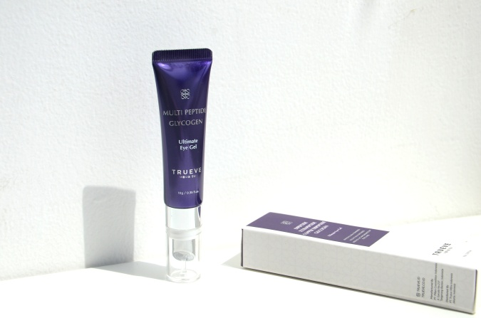
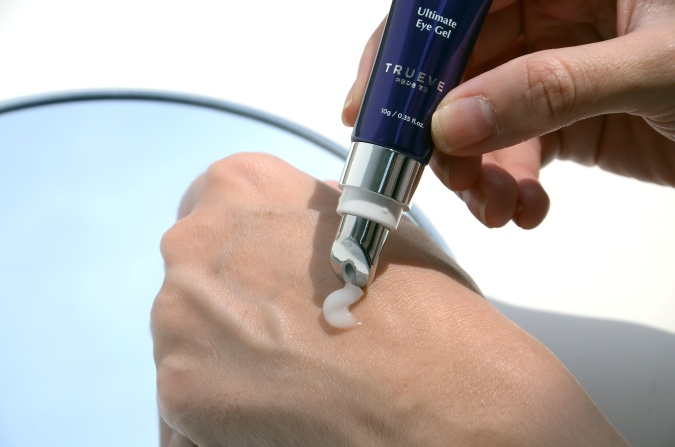

Moisturizer wajah biasa tidak cukup untuk membantu merawat kulit area mata, karena area tersebut sangat tipis, sensitif, dan paling mudah berkerut. Makanya, salah satu tanda penuaan paling jelas sering tampak di mata. Itu sebabnya kamu perlu menjaga kulit area mata dengan produk khusus eye treatment, berupa eye serum, eye cream, eye mask, atau eye massager, yang bisa menjaga kelembapan dan kekencangannya.
Nah, kamu nggak perlu bingung lagi mencari eye treatment yang bagus. Banyak banget eye treatment yang ditawarkan oleh brand lokal yang terus berkembang dari hari ke hari. Trueve, brand skincare lokal yang hadir tahun 2020 lalu, kini merambah ke perawatan kulit area mata, dan meluncurkan produk yang bernama Ultimate Eye Gel! Setelah sudah mencoba beberapa serum wajahnya tahun lalu, kini saya juga berkesempatan mencoba produk Ultimate Eye Gel ini. Apa saja sih keunggulan produk ini?
1. Mengandung Multipeptide

Peptide dikenal sebagai ingredient yang belakangan ini jadi primadona dalam produk skincare anti-aging. Itu karena kemampuannya dalam memicu produksi kolagen, sehingga membuat kulit lebih kenyal dan elastis. Peptide aman dipakai oleh semua jenis kulit dan juga bisa digunakan pagi atau malam. Nah, dalam produkk Trueve Ultimate Eye Gel, yang digunakan adalah beberapa jenis Peptide sekaligus yaitu Dipeptide-2 yang berasal dari Prancis, Acetyl Tetrapeptide-2 yang juga berasal dari Prancis, serta Copper Tripeptide-1 yang berasal dari China.
Perpaduan ketiga bahan tersebut mampu melembapkan kulit area mata, membantu menyamarkan kantung mata, serta mengurangi tampilan dark circles. Kandungan asam amino dalam Peptide juga tinggi antioksidan sehingga bisa melindungi kulit dari radikal bebas dan merawat pembaruan sel kulit. Peptide yang digunakan juga punya molekul kecil, sehingga penyerapannya lebih maksimal, membuat kolagen area kulit mata lebih terangsang, menghasilkan kulit yang lebih halus, kencang, dan bisa mencegah kerutan atau fine lines muncul terlalu cepat!
2. Dilengkapi dengan Glycogen
Trueve Ultimate Eye Gel ini juga mengandung Glycogen yang berfungsi melembapkan kulit dan meningkatkan produksi Hyaluronic Acid. Pemakaian secara teratur bisa mengikat kadar air di kulit area mata, sehingga membuat mata tampak lebih segar, plumpy, dan nggak gampang berkerut.
3. Tekstur Mudah Meresap

Karena hadir dalam format gel, produk eye treatment ini lebih terasa ringan dan mudah menyerap ke dalam kulit. Nyaman digunakan pagi atau malam hari, dan bisa bikin makeup area mata lebih menempel juga, karena kulit area mata terasa lebih terhidrasi.